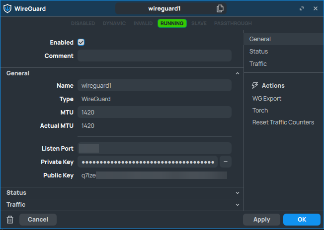
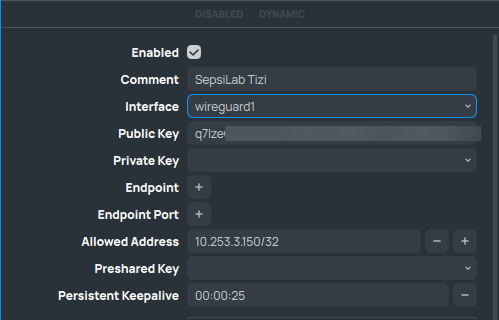
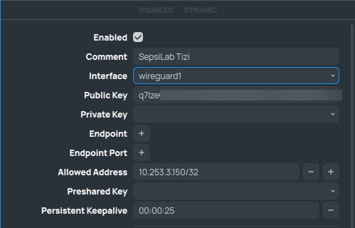
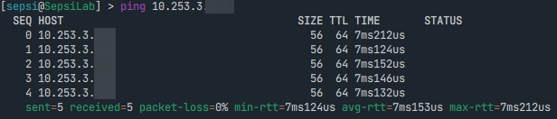

WireGuard
WireGuard is a general purpose VPN which is meant to be simple, fast and secure. We will be using it to create a secure connection between different networks we might need to access.
See also
For more information on WireGuard and it’s use, visit the WireGuard website
First things first, we have to create the WireGuard interfaces we need on all routers.

The interfaces look similar on all routers, the only difference will be the generated Public and Private Key and the IP address we will assign to it.
The Public and Private key will be used to encrypt and decrypt the data that is going to be travelling over the VPN tunnel.
Warning
Never share your Private key with anyone, as this will compromise your data. The Public key is the only one that will be necessary for configuration on other devices.
SepsiLab:

sagan:


Note
We don’t have to configure any static routes, the router learns the correct route dynamically.
After setting up the interface, we need to establish the WireGuard tunnel by setting up the peers. To connect the routers, we only need one public IP address. In our case, router sagan is the publicly reachable device. As such, we can configure the endpoint address for the SepsiLab router to point towards router sagan.
Important
Because we only have one public IP address the only way the WireGuard tunnel can be established, is when router SepsiLab initiates it. Router sagan will not be able to find the SepsiLab router otherwise.
 

If you look closely, you can see that the allowed addresses are different for both configurations. This is because I want the SepsiLab router to be able to accept all devices on the VPN network.
For router Sagan, the only address that will send data over that specific tunnel, will be the address of the SepsiLab router. This is just a safety precaution, and won’t impact the connectivity in any way.
And with that, we have configured a WireGuard connection between the routers!
A quick ping test will show the following:
Now that we’ve successfully checked if our WireGuard connection works, we can move on to configuring the NAT rules.
Note
In our setup, router Gala was already connected to router Sagan. Later on, we will be connecting to Gala from the SepsiLab too.